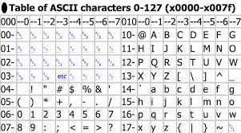

In Nederland zijn wij gewend aan het tientallig getallenstelsel (alle getallen van 0 tot 9).
Bij het binaire stelsel werk je alleen met de 0 en de 1. Dit heet het binaire getallenstelsel.
Door deze twee getallen in een bepaalde volgorde te zetten kun je ook grotere getallen dan 0 en 1 maken.
Het binaire stelsel is eigenlijk de taal die computers spreken.
Zo'n 0 of 1 heet een bit, bij computers staan er vaak 8 nullen/enen achter elkaar dat heet een byte.
ASCII is een tabel waaraan je kan zien hoe elk karakter op verschillende manieren genoteerd wordt.
klik op onderstaande afbeelding om een uitleg filmpje over het binairestelsel te bekijken.
